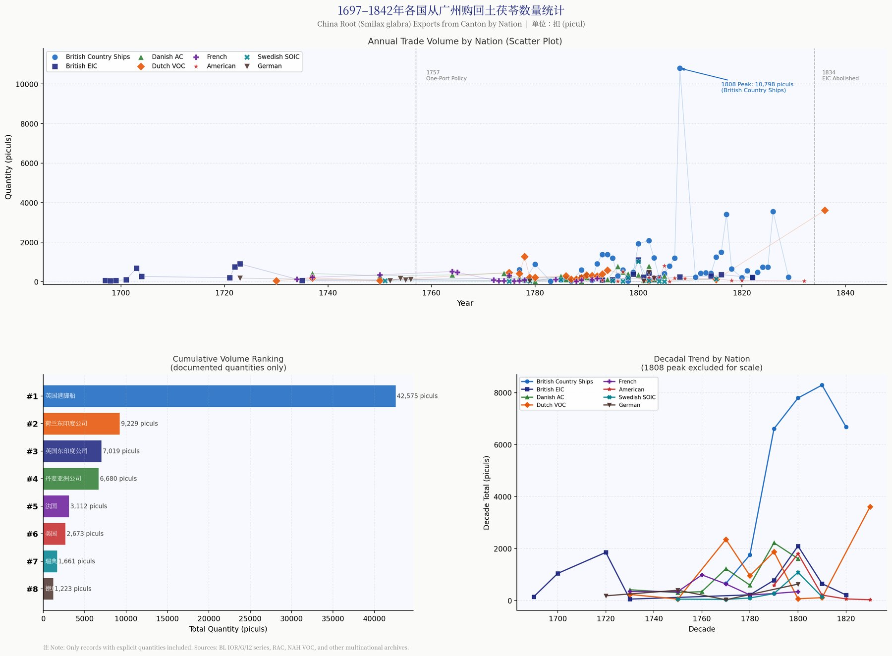

Tracing the China Trade: SOIC Voyages and the Global Journey of China Root, 1732–1813
Phase 1 — Infrastructure & Seed Data in progress
This project builds a structured, open dataset from the trade manifests of the Swedish East India Company (SOIC) and the English East India Company (EIC), together with shipping news in early American newspapers (1784–1842). It forms the computational layer of my research on the global circulation of China Root (tufuling, Smilax glabra) — asking not only how much of the root crossed the oceans, but how commercial print (cargo lists, price currents, shipping columns) shaped European and American imaginations of Chinese commodities. Computation here extends, rather than replaces, close archival reading.
Digital Humanities Trade Manifests SOIC · EIC Mapping & Network Analysis

The Gothenburg–Cadiz–Canton Circuit
SOIC vessels carried Swedish iron, copper and timber to Cadiz, exchanged them for Spanish-American silver, and sailed on to Canton, where silver bought tea, porcelain, silk — and medicinal goods such as China Root. Between 1731 and 1813 the company mounted 132 expeditions, 129 of them to Canton.
Route reconstruction after Frängsmyr (1976), Koninckx (1980), and Han, “Qing-Dynasty Sweden and Xiangshan Culture” (forthcoming). Waypoints are schematic, not navigational tracks.
The Trade at a Glance
Expeditions per charter (oktroj)
Destinations, 1731–1813
Totals (132 expeditions; 129 to Canton, 3 to India) after Frängsmyr (1976) and Koninckx (1980). Per-charter breakdown pending final verification against Koninckx’s appendix.
Key dates
- 1731 Fredrik I grants the SOIC its first 15-year charter
- 1732 Friedericus Rex Sueciae departs Gothenburg; Colin Campbell establishes the Swedish factory at Canton
- 1745 The Götheborg sinks at the entrance to Gothenburg harbour, returning from Canton
- 1757 The Qing court restricts European trade to Canton (the “Canton System”)
- 1784 The Empress of China opens direct American trade with Canton — the start of the U.S. shipping-news layer of this dataset
- 1806 Last SOIC departure from Canton
- 1813 SOIC closes its Canton factory
Datasets
Two relational tables anchor the project. Voyages records SOIC expeditions (ship, years, route, outcome, source); Cargo records commodity-level entries for China Root transcribed from company manifests and newspaper shipping columns, each row tied to an archival shelfmark. The seed sample below will grow as transcription proceeds.
| Voyage | Ship | Years | Destination | Note | Outcome | Source |
|---|
⬇ soic_voyages.csv ⬇ china_root_cargo.csv (schema)
Data released under CC BY 4.0. Cite as: Han, Jincheng, “Tracing the China Trade” (digital project, 2026).
SOIC Sales Catalogues, 1733–1759 (Försäljningsböcker)
Full translation completed June 2026 21 volumes · 2,003 pages
A transcription-and-translation project based on the Riksarkivet microfilms (Ostindiska kompaniet, Försäljningsböcker, SE/RA/420132/31/2, rolls R0002253–R0002259) and the Warwick digital series, recording the Gothenburg auctions of SOIC return cargoes: the printed Verkauffungs-Conditiones (auction conditions in German) and manuscript sales ledgers listing every lot, buyer and hammer price. The complete Chinese translation — 21 volumes, 2,003 pages (1733–1759) — is now readable and searchable online, alongside a structured database of 19,000+ auction records (lot, commodity, buyer, price) extracted from 1,469 ledger tables.
📖 Open the Archive Reader — 全文阅读 · 检索 · 拍卖数据库 →
Highlights so far: the 1733 maiden-voyage catalogue of the Friedericus Rex Sueciæ already lists “Eine Parthey Radix Chinæ” — China Root at the very first SOIC auction; the December 1742 joint sale (Riddarehuset & Stockholm from Canton, Friedericus Rex Sueciæ from Bengal) records 721,694 catties of Bohea tea, 200,043 catties of tutenag, 2,197 catties of rhubarb, turmeric from both Canton and Bengal, and 2,652 maunds of saltpetre; the 1745 tea ledgers name the buyers — Sahlgren, Campbell, Ross, Arfwidsson — lot by lot.
| Roll | Year | Ship(s) | Pages | Contents |
|---|---|---|---|---|
| R0002253 | 1733 | Friedericus Rex Sueciæ (1st voyage) | 145 | Auction conditions + full sales ledger |
| R0002254 | 1736 | Friedericus Rex Sueciæ | 136 | Sales book |
| R0002255 | 1742 | Götheborg (1st voyage) | 75 | Sales book |
| R0002256 | 1742 | Riddarehuset & Stockholm + FRS (Bengal) | 131 | Joint auction, Canton + Bengal cargo |
| R0002257 | 1743 | FRS Bengal goods | 45 | Bengali textiles ledger |
| R0002258 | 1743 | Calmare | 70 | Sales book |
| R0002259 | 1745–46 | Calmare & Friedericus Rex Sueciæ | 236 | Tea ledgers with buyers and prices |
⬇ soic_sales_catalogues_overview.csv ⬇ soic_cargo_1733_friedericus_rex.csv ⬇ soic_cargo_1742_riddarehuset_stockholm.csv ⬇ soic_buyers_sample_1745.csv ⬇ soic_gotheborg_1742_ledger.csv (825 lots, Götheborg auction 1742) ⬇ soic_auction_records_1733_1759.csv (19,000+ curated auction records, all volumes) ⬇ soic_archive_tables_full.csv (all 25,000+ table rows, uncurated) ⬇ Full translation, edited edition (Word, 21 vols 整理版全文)
The full translated text is also published volume-by-volume as JSON
(data/archive/vol01–vol21.json + index.json) for computational reuse —
see the GitHub repository.
Compare the same series online: Sales catalogues of the Swedish East India Company 1733–1759 (Warwick Digital Collections). Transcription in progress; buyer names marked (?) await verification.
Method & Pipeline
1 · Sources. SOIC archives (Gothenburg University Library; Riksarkivet), EIC records (British Library, IOR),
and digitized American newspapers, 1784–1842.
2 · Transcription. Manuscript manifests are transcribed with handwritten-text-recognition tools
(Transkribus) and corrected by hand; printed shipping columns via OCR.
3 · Structuring. Entries are normalized into the relational schema above with Python (pandas);
units (piculs, lbs) and currencies (taels, riksdaler, sterling, dollars) are reconciled in dedicated lookup tables.
4 · Analysis & visualization. Time-series of China Root shipments, route mapping (Leaflet),
and merchant–ship–port network analysis, read against close analysis of the documents themselves.
Limitations. Manifests record what companies declared, not all that moved; smuggling, private trade and spoilage leave gaps that quantification alone cannot close. The dataset is therefore published with its sources exposed, row by row, so that every number can be walked back to a document.